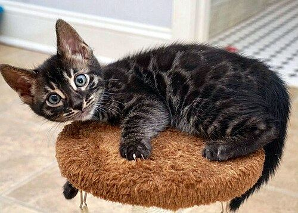
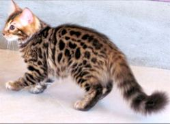
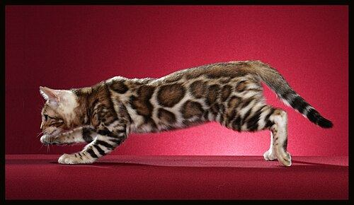
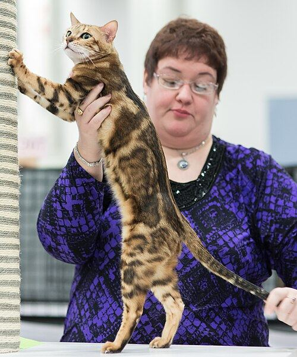
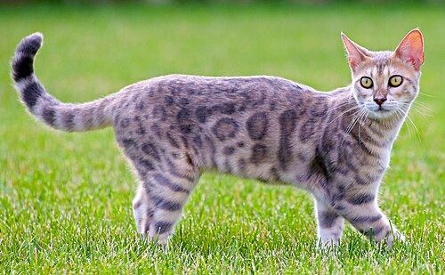
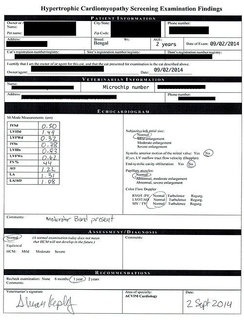
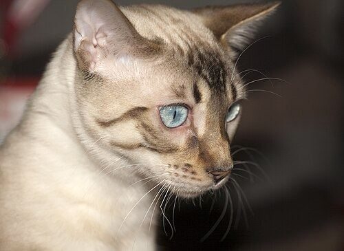

The Bengal cat (Prionailurus bengalensis × Felis catus) is a breed of hybrid cat created from crossbreeding an Asian leopard cat to domestic cats, especially the spotted tabby Egyptian Mau. Bengals have varying appearances. Their tabby coats range from domestic spots to hybrid rosettes, arrowhead markings, and marbling. The breed is selectively bred and pedigree registered with most of the major cat registries. The breed's name derives from the leopard cat's taxonomic name. The bengal cat is considered a medium to large breed.
Due to the recent hybridisation with their wild ancestor species, the breeding, trading, and ownership of Bengal cats is legally regulated in several countries.
Etymology
The breed's name derives from that of the Asian leopard cat (Prionailurus bengalensis), from which the Bengal cat was originally hybridised. The species epithet bengalensis is a Latin geographical adjective meaning “of Bengal”, referring to the Bengal region of South Asia.
History
The earliest mention of an Asian leopard cat × domestic cat hybrid was in 1889, when Harrison Weir wrote of them in Our Cats and All About Them.
Jean Mill of California, US, is given credit for the modern Bengal breed. In 1963, she made the first known deliberate cross of an Asian leopard cat with a domestic cat (a black tomcat). Bengals as a breed did not really begin in earnest until much later.
Breed registration
Cat registries

In 1986, the breed was accepted as a "new breed" by The International Cat Association (TICA); Bengals gained TICA championship status in 1991. The Governing Council of the Cat Fancy (GCCF) accepted Bengal cats in 1997. Fédération Internationale Féline (FIFe) in 1999 accepted the breed into their registry. Also in 1999, Bengals were accepted into the Australian Cat Federation (ACF). The Cat Fanciers' Association (CFA) accepted the Bengal in CFA's "Miscellaneous" in 2016, under the restrictions that "it must be F6 or later (6 generations removed from the Asian leopard cat or non-Bengal domestic cat ancestors)".
Longhair variety

Long-haired Bengals have occurred since the early development of the breed. The long-hair trait is thought to derive from domestic cats used in the breed's foundation, introduced through backcrossing. The gene responsible is recessive, meaning that two carrier Bengals can produce long-haired offspring. Genetic testing, including a test developed by the UC Davis, US, enables breeders to identify carriers for selective breeding purposes.
Historically, long-haired kittens were neutered and excluded from breeding programmes. However, some breeders later began deliberately developing the variety, often referred to as the Cashmere Bengal. Recognition of the long-haired Bengal remains limited but is increasing. Since 2013, the New Zealand Cat Fancy (NZCF) has granted it preliminary breed status under the name Cashmere Bengal. Since 2017 The International Cat Association (TICA) has accepted the Bengal Longhair for competition.
Popularity
In 1992, TICA had 125 registered Bengal breeders. By the 2000s, Bengals had become a very popular breed. And in 2024, the Bengal stands as the most popular breed within TICA with nearly 200.000 registered kittens bred by over 2.000 private breeders since the breed's establishment.
In the 2024 statistics of FIFe, one of the major global cat registries, the Bengal ranked as the 7th most popular cat breed, comprising 3.7% of their total registered kittens that year, which translates to 3,559 cats.
Characteristics



Appearance
Colours
Bengals come in a variety of coat colours and patterns:
- black (also known as brown, seal or sable)
- blue
- spotted (including rosetted) and marbled tabby patterns
- with and without silver
- with and without charcoal
- three colourpoint restriction patterns (known as "snow" in Bengals): point, sepia, mink
Genetics
Genetic ancestry
Genome sequencing of 947 Bengal cats in 2024 found that they had an average of 3.48% leopard cat DNA, broadly distributed, covering 93% of the leopard cat genome.
Spotted, rosetted and marble markings
Domestic cats naturally come in four distinct and heritable tabby coat patterns – ticked, mackerel, blotched, and spotted. The Bengal cat is the only domestic breed of cat that has rosette markings, due to the wild gene being inherited from the Asian leopard cat.
Geneticist Christopher Kaelin has conducted research at Stanford University in the US that has been used to identify the spotted and the marble gene in Bengal cats. Kaelin studied the colour and pattern variations of feral cats in Northern California, US, and was able to identify the gene responsible for the marble pattern in Bengal cats.
Early generations
Bengal cats from the first three generations of breeding (F1, F2, and F3) are considered "foundation" or "early-generation" Bengals. The early-generation males are frequently infertile. Therefore, female early-generation Bengals are bred to fertile domestic Bengal males of later generations. Nevertheless, as the term was used incorrectly for many years, many people and breeders still refer to the cats as F2, F3, and F4, even though the term is considered incorrect.
Bengal blood-type
The UC Davis Veterinary Genetics Laboratory in the US has studied domestic cat blood-types. They conclude that most domestic cats fall within the AB system. The common blood-types are A and B and some cats have the rare AB blood-type. There is a lack of sufficient samples from Bengals, so the genetics of the AB blood-group in Bengal cats is not well understood.
One Bengal blood-type study that took place in the UK tested 100 Bengal cats. They concluded that all 100 of the Bengal cats tested had type A blood.
Fur allergen levels
Bengals are often claimed by breeders and pet adoption agencies to be a hypoallergenic breed – one less likely to cause an allergic reaction. The Bengal cat is said to produce lower than average levels of allergens, though this has not been scientifically proven as of 2020.
Cat geneticist Leslie Lyons, who runs the University of Missouri's Feline and Comparative Genetics Laboratory in the US, discounts such claims, observing that there is no such thing as a hypoallergenic cat. Alleged hypoallergenic breeds thus may still produce a reaction among those who have severe allergies.
Health
Hypertrophic cardiomyopathy (HCM)

Hypertrophic cardiomyopathy (HCM) is a major concern in the Bengal cat breed. Hypertrophic cardiomyopathy is a disease in which the heart muscle (myocardium) becomes abnormally thick (hypertrophied). A thick heart muscle makes it difficult for the cat's heart to pump blood.
HCM is a common genetic disease in Bengal cats and there is no genetic testing available as of 2018. In the US, the current practice of screening for HCM involves bringing Bengal cats to a board certified veterinary cardiologist where an echocardiogram is completed. Bengal cats that are used for breeding should be screened annually to ensure that no hypertrophic cardiomyopathy is present. As of January 2019, the North Carolina State University in the US is attempting to identify genetic markers for HCM in the Bengal.
A study in 2013 has claimed the prevalence of hypertrophic cardiomyopathy in Bengal cats is 16.7% (95% CI = 13.2–46.5%).
Bengal progressive retinal atrophy (PRA-b)
Bengal cats are known to be affected by several genetic diseases, one of which is Bengal progressive retinal atrophy, also known as Bengal PRA or PRA-b. Bengal progressive retinal atrophy causes cats to slowly lose their vision and eventually become blind. The vision loss begins around 7 weeks of age and gets worse over time, with very poor eyesight by about 2 years old. Blind cats often have more trouble seeing at night and may become louder or more attached to their owners. Their pupils are usually more enlarged than normal in the same light, and they often hold their whiskers farther forward.
Erythrocyte pyruvate kinase deficiency (PK-deficiency or PK-def)
PK deficiency is a common genetic diseases found in Bengal cats. PK deficiency is another test that is administered by the breeder. Breeding Bengal Cats should be tested before breeding to ensure two PK deficiency carriers are not mated. This is a test that a breeder must do on their own. A breeder uses a cotton swab to rub the inside of the cat's mouth and then mails the swab to the laboratory.
Ulcerative nasal dermatitis
A unique form of ulcerative dermatitis affecting the nasal planum (rhinarium or nose leather) of Bengal cats was first reported in 2004. The condition first presents between the ages of 4–12 months, beginning as a dry scale and progressing to crusts and fissures typical of hyperkeratosis. The exact cause remains unclear; it is considered hereditary and incurable, but can respond favourably to topical steroid treatments such as prednisolone and tacrolimus ointment.
Life expectancy
A UK study looking at veterinary records found the Bengal to have a life expectancy of 8.51 years compared to 11.74 years overall.
Legal restrictions

In Australia, importation of Bengal cats was banned effective March 2025, when a previously existing exemption for G5 specimens was removed. A petition was subsequently filed to put Bengal cats on the Live Import List, which the Invasive Species Council urged the government to reject.
Bengals were regulated in the United Kingdom. In 2007, however, the Department for Environment, Food and Rural Affairs removed the previous licensing requirements.
In the United States, legal restrictions and even bans sometimes exist at the state and municipal level. In Hawaii, Bengal cats are prohibited by law (as are all wild cat species, and all other hybrids of domestic and wild animals). In Connecticut, it is also illegal to own any generation of Bengal cat. In Alaska, Bengal cats must be four generations removed from the Asian leopard cat. A permit and registered pedigree that indicates the previous four generations are required. In California, the code of regulations Title 14, section K, Asian leopards are not specifically listed as a restricted species. In Delaware, a permit is required to own Bengal cats. Bengals of the F1–G4 generations are also regulated in New York state, Georgia, Massachusetts, and Indiana. Various cities have imposed restrictions; in New York City, Bengals are prohibited, and there are limits on Bengal ownership in Seattle, Washington, and in Denver, Colorado. Except where noted above, Bengal cats with a generation of G5 and beyond are considered domestic, and are generally legal in the US.
In New Zealand's Southland District, the Bengal cat requires a permit to own and is banned on any off-shore islands including Stewart Island.
In the Netherlands and Belgium (Flanders and Brussels) it is illegal to own or breed Asian leopard cats and also their F1–F4 generation hybrid Bengal offspring.